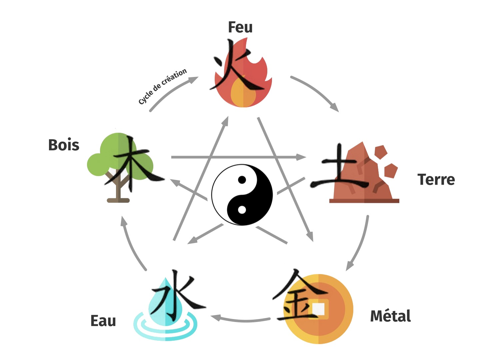

Le Feng Shui Traditionnel
Comme tout art métaphysique, le Feng Shui peut s’expliquer par 1000 mots , mais rien n’en vaudra l’expérience.
Le Feng Shui : plus qu’une science, un trésor 🙏
La naissance d’une science
Issu des arts millénaires taoïstes chinois, le Feng Shui traditionnel est aujourd’hui considéré comme une véritable science. En effet, cette science est le fruit de vastes études et analyses sérieuses de terrains et de peuples, qui ont été menées par les maîtres taoïstes chinois d’il y a près de 5000 ans. Ces études ont donné naissance à des théories et des formules, parfois complexes, qui mettent en relation la place de l’Homme dans son environnement, entre le Ciel et la Terre, entre la Montagne et l’Eau, en y associant également le paramètre du Temps. Ainsi, les fondements des différents systèmes du Feng Shui traditionnel sont basés sur l’observation de l’influence de l’environnement sur les différents peuples à cette époque, à savoir sur l’essor ou le déclin potentiel de ces mêmes peuples, en fonction des conditions dans lesquelles ils vivaient et donc de leurs relations avec l’Espace et le Temps (climat, saisons, géographie ..).

Le Souffle du Dragon
De la Montagne, s’écoule le souffle du Dragon, également appelé souffle cosmique, ou encore souffle vital : c’est le fameux Qi (Chi). Le Qi traverse, relie et anime toute chose sur Terre. C’est le fluide vital qui anime tout être vivant, de sa naissance jusqu’à sa mort. C’est l’Energie qui monte au Printemps et redescend à l’Automne. C’est celle qui sommeille en Hiver, et qui brûle en Été, à son apogée, par le Feu du plein soleil. C’est aussi l’Energie qui donne force et densité au Minéral, son aplomb et son expansion au Végétal, ses courbes et sa fluidité à l’Océan.
La manifestation de l’Univers
A l’origine du Cosmos, nous étions 1. Pour se manifester, l’Univers, le Grand Tout, s’est divisé en 2, puis 3, puis en 10 000 êtres . Le Yin et le Yang , représenté par le symbole du Tai Ji, montre que rien n’existe dans l’existence sans son contraire, sans son opposé. Le chaud et le froid, le grand et le petit, le lourd et le léger, l’Amour et la peur ...

.. tout, absolument tout dans l’univers est en dualité. Et, à la maturité de chaque chose, germe la graine de l’opposé. Tout est cycle de transformation. Tout est cycle permanent de mort et de renaissance. Dans les philosophies bouddhiste et hindouiste, le but de l’existence est de revenir à la grande conscience, à l’Unité.
Pour définir l’univers, les taoïstes ont finalement mis au point le système de transformation de la matière, par le système des 5 mouvements, ou des 5 éléments (Eau, Bois, Feu, Terre, Métal) qui interagissent entre eux en permanence par 3 cycles différents et complémentaires (cycle de production, cycle de destruction, cycle de contrôle).
Applications modernes
C’est grâce à ces différents outils, le Yin et le Yang, les 5 éléments, les formules du paysages (espace extérieur - San He), des 8 palais (espace intérieur - Ba Zhai) et des étoiles volantes (temps - Xuan Kong Fei Xing) que la circulation, la canalisation ou la neutralisation du Qi, en fonction de s’il est favorable (Sheng Qi) ou défavorable (Sha Qi) aux habitants d’un lieu de vie, est travaillée.
A sa naissance, chaque être vivant reçoit comme un flash énergétique, qui lui attribue comme un code, une identité cosmique (le Ming Gua). C’est en combinant ce code avec les différentes formules et systèmes de Feng Shui traditionnel que l’on va pouvoir analyser et définir si les énergies en présence d’un lieu sont favorables ou défavorables aux habitants. Alors le praticien Feng Shui pourra recommander et conseiller des aménagements et des changements spécifiques au bureau et à la maison, afin d’optimiser les 4 grands différents aspects de la Vie : Amour & Relations, Santé & Aide céleste , Vitalité & Prospérité, Sérénité & Paix intérieure.
Mission du praticien Feng Shui
Telle est la grande mission d’un praticien en Feng Shui traditionnel : tout mettre en œuvre, de façon honnête et éthique, suite à la demande claire et respectueuse de son client, pour épanouir ses potentiels de vie & optimiser sa destinée.